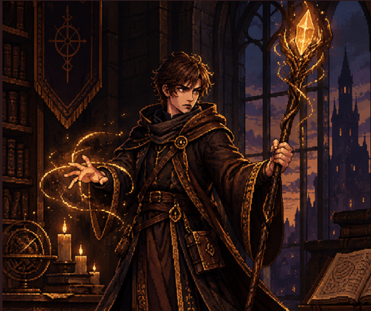
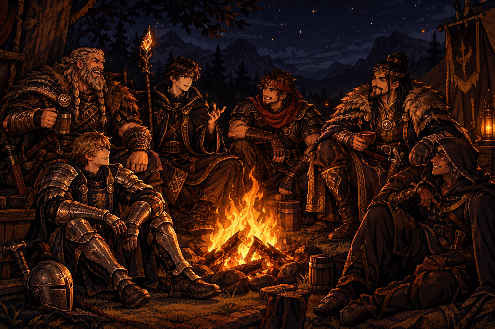

Comunidade
Faça parte do universo de Prelude! Aqui você encontra onde nos seguir, conversar com outros jogadores e conferir criações feitas pela própria comunidade sobre os heróis, vilões e a história do jogo.
Onde nos encontrar
Destaques da Comunidade
Fan arts, prints e criações enviadas pelos jogadores.

por @nomeDoJogador

por @nomeDoJogador
?
Em breve
Regras da Comunidade
- Respeite todos os membros — sem discurso de ódio ou assédio.
- Nada de spoilers da história fora das áreas marcadas para isso.
- Conteúdo enviado deve ser de sua autoria ou devidamente creditado.
- Divirta-se e ajude a construir o universo de Prelude com a gente!